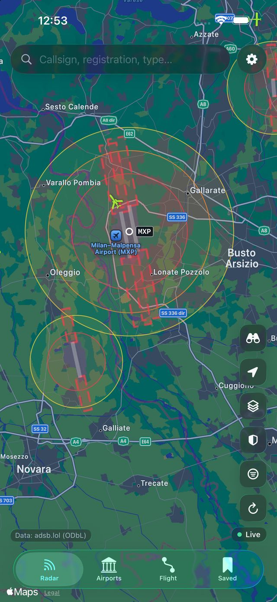
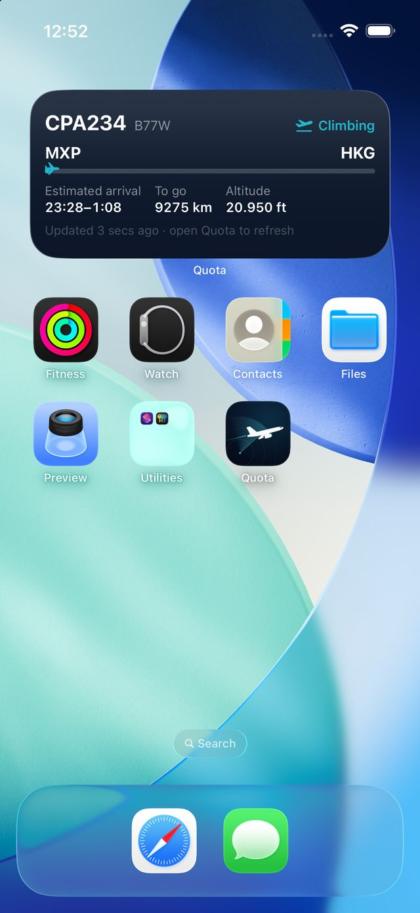
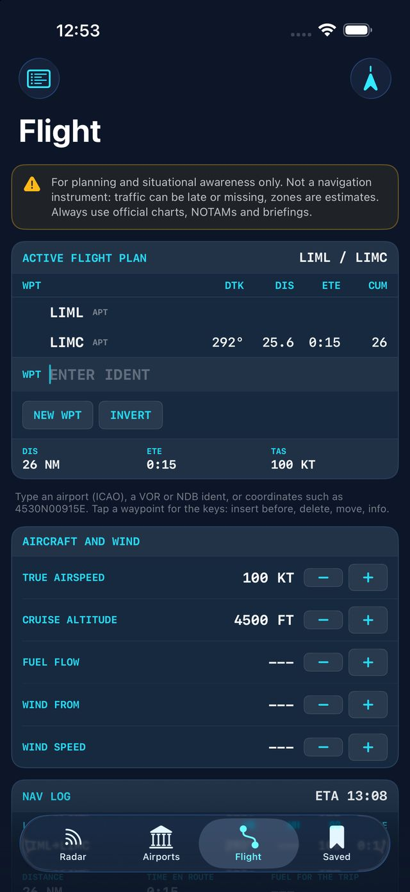
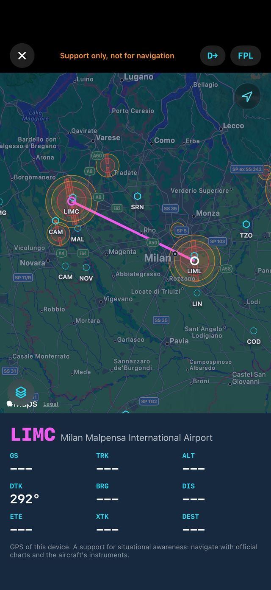

Real aircraft.
Nothing invented.
Aerei veri.
Niente di inventato.
Live traffic worldwide, airports with their no-fly zones, a flight plan page like an onboard computer and the satellites passing overhead. Every value says whether it is live, cached or estimated.
Traffico in diretta in tutto il mondo, aeroporti con le zone no-fly, una pagina piano di volo come un computer di bordo e i satelliti che ti passano sopra. Ogni valore dice se è in diretta, in cache o stimato.
The sky above you, as it really is.
Il cielo sopra di te, com'è davvero.
Every position comes from the aircraft itself, received by community networks of ADS-B receivers. Between two updates Quota glides the aircraft along its track, and never draws a landing aircraft past the runway.
Ogni posizione arriva dall'aereo stesso, ricevuta da reti comunitarie di ricevitori ADS-B. Tra un aggiornamento e l'altro Quota fa scorrere l'aereo lungo la sua rotta, e non disegna mai un aereo in atterraggio oltre la pista.
Live aircraft, worldwide.
Aerei in diretta, in tutto il mondo.
- No account and no key: aircraft appear the moment you open the app.
- Tap one for its instruments — heading, altitude tape, vertical speed, ground speed — its departure and usual route.
- Larger markers higher up, helicopters with turning rotors, emergencies in red.
- Layers: SIGMET weather, estimated airport and drone zones, space stations and satellites.
- Nessun account e nessuna chiave: gli aerei compaiono appena apri l'app.
- Toccane uno per i suoi strumenti — prua, nastro della quota, variometro, velocità al suolo — la partenza e la rotta abituale.
- Simboli più grandi in quota, elicotteri con le pale che girano, emergenze in rosso.
- Livelli: meteo SIGMET, zone aeroportuali e droni stimate, stazioni spaziali e satelliti.
Runways, zones and weather.
Piste, zone e meteo.
- Runways, terminals, aprons and car parks, with estimated drone no-fly and height-limited zones.
- Arrivals and departures happening now, from live traffic.
- METAR and TAF decoded, runway wind, frequencies, local time.
- Directions with Apple Maps, Google Maps or Waze.
- Piste, terminal, piazzali e parcheggi, con le zone droni vietate o con limite di quota stimate.
- Arrivi e partenze in corso, dal traffico in diretta.
- METAR e TAF decodificati, vento in pista, frequenze, ora locale.
- Indicazioni con Apple Mappe, Google Maps o Waze.

On your Lock Screen and Home Screen.
Sulla schermata di blocco e nella Home.
- Follow puts the aircraft in the Dynamic Island.
- Saved flights appear in widgets and as a Live Activity, with progress and an honest arrival window.
- Share a card of the flight with its map and data.
- Segui mette l'aereo nella Dynamic Island.
- I voli salvati compaiono nei widget e come Live Activity, con avanzamento e una finestra di arrivo onesta.
- Condividi una card del volo con mappa e dati.

Satellites overhead
Satelliti sopra di te
Passes of the ISS, the Tiangong station, Hubble and the latest Starlink trains, with a reminder five minutes before each visible pass.
Passaggi della ISS, della stazione Tiangong, di Hubble e degli ultimi treni Starlink, con un promemoria cinque minuti prima di ogni passaggio visibile.
"What plane is that?"
"Che aereo è quello?"
Point the camera at the sky and Quota names the aircraft, the Moon and the satellites in view. The camera image never leaves the screen.
Punta la fotocamera al cielo e Quota ti dice quali aerei, la Luna e i satelliti stai guardando. L'immagine non lascia mai lo schermo.
Saved, on your device
Salvati, sul tuo dispositivo
Aircraft and airports you save stay on your iPhone or iPad. No cloud account, nothing to sign up for.
Aerei e aeroporti salvati restano sul tuo iPhone o iPad. Nessun account cloud, niente da registrare.
A flight plan page, like an onboard computer.
Una pagina piano di volo, come un computer di bordo.
Plan on the ground, glance at it in flight. Airports, VOR, NDB and coordinates with autocomplete, a nav log with winds aloft, and a flight mode for the cockpit.
Pianifica a terra, consultalo in volo. Aeroporti, VOR, NDB e coordinate con autocompletamento, un log di navigazione con i venti in quota e una modalità volo per l'abitacolo.
Plan the route.
Pianifica la rotta.
- Magnetic courses (WMM2025), wind correction, ground speed, times and fuel, leg by leg.
- Winds and temperatures aloft from the NOAA GFS forecast, at your cruise altitude.
- Terrain profile, navaids along the route, METAR, runway wind, density altitude and daylight at both ends.
- Flight computer, weight and balance, checklists and a logbook that fills itself.
- Rotte magnetiche (WMM2025), correzione vento, velocità al suolo, tempi e carburante, tratta per tratta.
- Venti e temperature in quota dalle previsioni NOAA GFS, alla tua quota di crociera.
- Profilo del terreno, radioassistenze lungo la rotta, METAR, vento in pista, quota densità e luce alle due estremità.
- Computer di volo, massa e centraggio, checklist e un libretto di volo che si compila da solo.

The map first, the numbers beside it.
Prima la mappa, accanto i numeri.
- iPhone and iPad, portrait or landscape on a mount.
- Round instruments from the phone's GPS: ground speed, an HSI with course and deviation, GPS altitude and vertical speed.
- Direct-To, layers with zones and SIGMETs, and nearby traffic you can tap for callsign, clock position and height difference.
- iPhone e iPad, in verticale o in orizzontale su un supporto.
- Strumenti tondi dal GPS del telefono: velocità al suolo, un HSI con rotta e deviazione, quota GPS e variometro.
- Direct-To, livelli con zone e SIGMET, e il traffico vicino da toccare per nominativo, posizione a ore e differenza di quota.

Quota is a support for planning and situational awareness, not a navigation instrument. Always use official charts, NOTAMs, briefings and the aircraft's instruments.
Quota è un supporto alla pianificazione e alla consapevolezza della situazione, non uno strumento di navigazione. Usa sempre carte ufficiali, NOTAM, briefing e gli strumenti dell'aereo.
Where the data comes from.
Da dove vengono i dati.
Free, public sources, credited in the app. No schedules, gates or delays: ADS-B does not carry them, so Quota does not pretend to.
Fonti pubbliche e gratuite, citate nell'app. Niente orari, gate o ritardi: l'ADS-B non li trasmette, quindi Quota non fa finta.
Questions, answered.
Domande e risposte.
Do I need an account or a key?
No. Aircraft appear right away, worldwide, from adsb.lol. Nothing to sign up for.
Why is an aircraft missing, or late?
Coverage depends on volunteer receivers: dense over Italy and much of Europe, thinner elsewhere. Some aircraft do not broadcast their position. Between updates Quota moves aircraft along their track; positions are a few seconds old.
Why no schedules, gates or delays?
ADS-B does not carry them. Arrival times in Quota are its own estimates, always labelled as such.
Can I use it to navigate?
No. The pilot tools are a support for planning and situational awareness. Use official charts, NOTAMs, briefings, the aircraft's instruments and ATC.
Does it work on Mac?
Yes, on Macs with Apple silicon, as the iPad app. Features that need a camera, motion sensors or GPS (the sky finder, flight mode) are hidden there.
What does Premium include?
An optional one-time purchase, never a subscription: replay of saved flights, Sun and Moon transits, history, tracking sessions with CSV and PDF export, statistics, 3D terrain, advanced filters, watchlists, themes, and your own free FlyItalyADSB key (6-second refresh, the flight's trail from take-off, profiles and observed flights). Everything essential stays free. Restore it any time from the Premium screen or Settings.
What data does Quota collect?
None. No account, no analytics, no tracking. Your saved items and settings stay on your device. Details in the privacy policy.
Serve un account o una chiave?
No. Gli aerei compaiono subito, in tutto il mondo, da adsb.lol. Niente da registrare.
Perché un aereo manca o è in ritardo?
La copertura dipende da ricevitori volontari: fitta sull'Italia e su gran parte dell'Europa, più rada altrove. Alcuni aerei non trasmettono la posizione. Tra un aggiornamento e l'altro Quota fa scorrere gli aerei lungo la rotta; le posizioni hanno qualche secondo.
Perché niente orari, gate o ritardi?
L'ADS-B non li trasmette. Gli orari di arrivo in Quota sono stime sue, sempre indicate come tali.
Posso usarla per navigare?
No. Gli strumenti per piloti sono un supporto alla pianificazione e alla consapevolezza della situazione. Usa carte ufficiali, NOTAM, briefing, gli strumenti dell'aereo e l'ATC.
Funziona su Mac?
Sì, sui Mac con Apple silicon, come app per iPad. Le funzioni che richiedono fotocamera, sensori di movimento o GPS (il mirino nel cielo, la modalità volo) lì sono nascoste.
Cosa include Premium?
Un acquisto una tantum facoltativo, mai un abbonamento: replay dei voli salvati, transiti davanti al Sole e alla Luna, cronologia, sessioni di tracciamento con export CSV e PDF, statistiche, terreno 3D, filtri avanzati, liste, temi e la tua chiave FlyItalyADSB gratuita (aggiornamento ogni 6 secondi, scia del volo dal decollo, profili e voli osservati). Tutto l'essenziale resta gratis. Lo ripristini quando vuoi dalla schermata Premium o dalle Impostazioni.
Quali dati raccoglie Quota?
Nessuno. Nessun account, nessuna analisi d'uso, nessun tracciamento. Elementi salvati e impostazioni restano sul tuo dispositivo. I dettagli nell'informativa sulla privacy.
A person reads every message.
Ogni messaggio lo legge una persona.
Quota is made by one independent developer in Milan. Questions, bugs and ideas are all welcome.
Quota è fatta da uno sviluppatore indipendente a Milano. Domande, problemi e idee sono tutti benvenuti.
- Your device and iOS version
- For data questions, the callsign, registration or airport involved
- A screenshot helps a lot
- Il tuo dispositivo e la versione di iOS
- Per domande sui dati, il nominativo, la marca o l'aeroporto
- Uno screenshot aiuta molto
Replies usually within a few days.
Di solito rispondo entro pochi giorni.
GitHub
Report a bug or suggest a feature in public, and follow its progress.
Segnala un problema o proponi una funzione in pubblico, e seguine l'avanzamento.